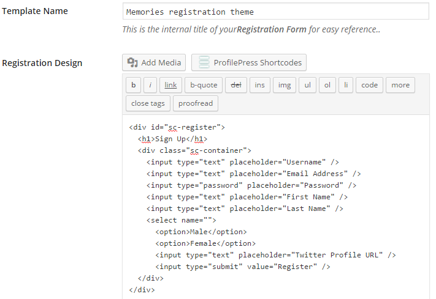

Let's see how ProfilePress can turn the registration form below into a working WordPress form for registering users.
See the Pen Login Form by Agbonghama Collins (@collizo4sky) on CodePen.
Click the Registration Form menu.
Click the Add New button.
Enter a name for the registration form in Template Name field.
The HTML and CSS code for the login form will go into the Registration Design and CSS Stylesheet textareas respectively.


Note: Error messages generated by registration forms powered by ProfilePress are wrapped in a div class <div class="profilepress-reg-status"> thus the .profilepress-reg-status class in the CSS stylesheet.
Click the Preview Design button to see how the registration form will look.

In order for ProfilePress to make this a functional WordPress registration form, the form components which in this case are the username, email, password, first & last name, Twitter profile text field; gender select drop-down and the submit button will have to be replaced by their ProfilePress shortcode equivalents
Below is the final revision of the Login form code.
<div id="sc-register">
<h1>Sign Up</h1>
<div class="sc-container">
[reg-username title="Username" placeholder="Username"]
[reg-email title="Email Address" placeholder="Email Address"]
[reg-password title="Password" placeholder="Password"]
[reg-first-name title="First Name" placeholder="First Name"]
[reg-last-name title="Last Name" placeholder="Last Name"]
[reg-cpf key="gender" type="select" title="Gender"]
[reg-cpf key="Twitter Profile URL" type="text" placeholder="Twitter Profile URL"]
[reg-submit value="Register"]
</div>
</div>
The shortcode for the form fields are pretty easy to understand except for that of the Twitter Profile URL and Gender (which are custom profile fields).
The [reg-cpf] shortcode is used for adding custom fields to ProfilePress powered registration form.
Custom fields are fields added to WordPress to extend its profile fields.
By default, WordPress doesn't include the `Gender` and `Twitter profile` fields. These fields and few other are automatically added to WordPress when ProfilePress plugin is installed and activated.
Replace the HTML form code earlier entered into the Registration Design textarea with the revised code above.
Enter the notification text that will be displayed after a successful user registration into the Message on successful registration field.

To make the registration form available as a WordPress widget, tick the Make this a Widget check box.

Save and then click the Back to Catalog button.
Copy the created registration form shortcode, paste it to a WordPress page and publish.

Preview the page and you will see the registration form in action.